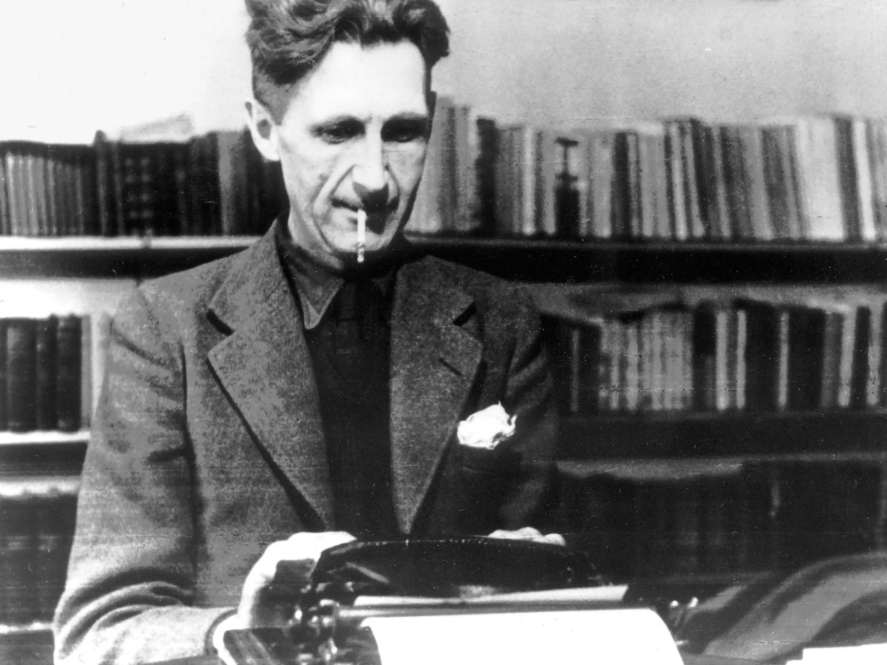

About the Author


Eric Arthur Blair (25 June 1903 – 21 January 1950), known by his pen name George Orwell, was an English novelist, essayist, journalist and critic. His work is characterised by lucid prose, biting social criticism, total opposition to totalitarianism, and outspoken support of democratic socialism.